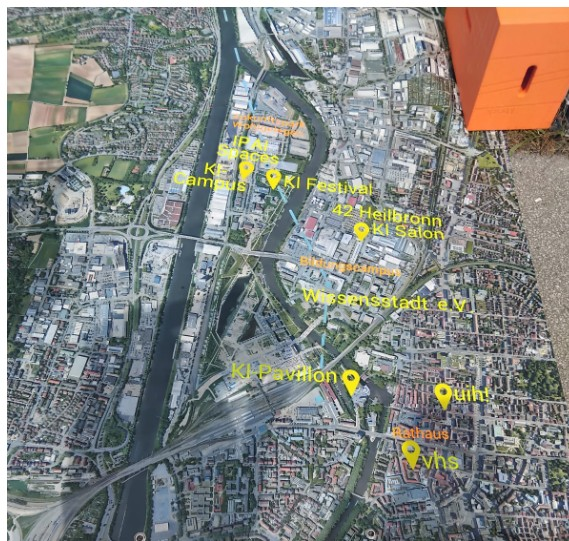

🌊 Warum ein sauberer Neckar?
Der Neckar fließt mitten durch Heilbronn – aber Schwimmen? Leider aktuell undenkbar und nicht empfehlenswert. Mit KI-gestützten Klär- und Reinigungsanlagen machen wir den Neckar wieder badefähig. Ziel: Sauberes Wasser, bessere Lebensqualität, neue Freizeitmöglichkeiten.
💡 Die Idee
Mithilfe von Künstlicher Intelligenz analysieren wir Wasserqualität in Echtzeit, steuern Reinigungsprozesse effizient und reduzieren Schadstoffeintrag durch intelligente Vorhersagen.
🚧 Herausforderungen
- Sicherheit: Badefreigabe nur mit verlässlicher Qualitätssicherung
- Finanzierung: Kombination aus Fördergeldern, Stadtbudget und Sponsoring
- Langfristiger Betrieb: Nachhaltigkeit durch automatisierte Wartung und Open-Data-Systeme
✅ Vorteile für Heilbronn
- Mehr Lebensqualität in der Innenstadt
- Tourismusförderung durch neue Attraktionen
- Ökologischer Gewinn: Saubere Gewässer für Tiere und Menschen
🗳️ Deine Meinung zählt!
Wie findest du die Idee? Würdest du mitmachen oder unterstützen?